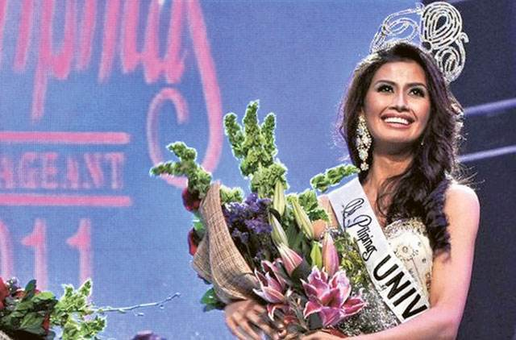

Shamcey Gurrea Supsup
Shamcey Gurrea Supsup was born on 16 May 1986 at Mercy Community Clinic in Iligan, Lanao del Norte, to Timoteo Ferolino Supsup and Marcelina Luega Gurrea.[8] Supsup moved with her family to General Santos when she was three years old, where she was raised primarily by her father while her mother worked overseas. Before studying in Manila, she helped her father on a farm.Shamcey Gurrea Supsup-Lee is a Filipino architect, beauty pageant titleholder and pageant organization director. She was crowned as Binibining Pilipinas Universe 2011. She represented the Philippines at the Miss Universe 2011 pageant in São Paulo, Brazil where she finished as 3rd Runner-Up.